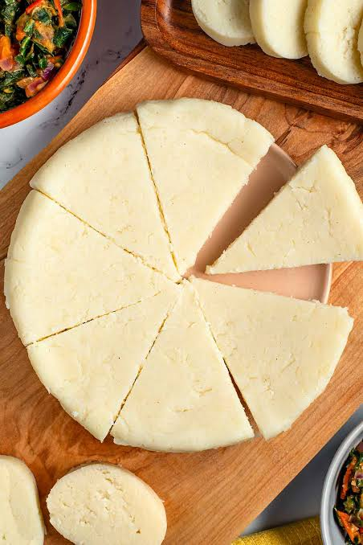

Home
Ugali

Description
Ugali is a dense, savory dough-like staple food made by cooking maize (corn) flour in boiling water until firm. In Kenya, it is a core everyday food, most commonly made from white maize flour and eaten alongside accompaniments rather than on its own.
Ingredients
- 4 cups (960 ml) water
- 2 cups (~250–320 g) fine white maize flour (unga)
- Pinch of salt optional
step-by-step instructions
- Boil the water: Pour the water and optional salt into a heavy-bottomed pot over high heat and bring to a rolling boil.
- Lower heat and start mixing: Reduce the heat to medium or medium-low. Slowly sprinkle in a handful or about ½ cup of maize flour while stirring vigorously with a wooden spoon or mwiko to avoid lumps.
- Add remaining flour: Gradually add the rest of the maize flour a little at a time, stirring and pressing lumps against the side of the pot until smooth and thick.
- Cook and turn: Lower the heat to low and cook for 5–10 minutes, stirring, folding, and pressing the dough so it cooks evenly without scorching.
- Finish and shape: The ugali is done when it holds together as a firm mass, pulls cleanly from the pot, and smells like cooked maize. Turn it onto a plate or use a wet spoon/bowl to shape it into a neat dome.
- Serve: Serve hot alongside sukuma wiki (collard greens), beef or goat stew, nyama choma, fried fish, or mala (fermented milk).
Home